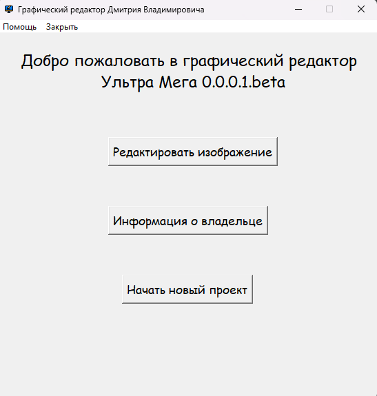
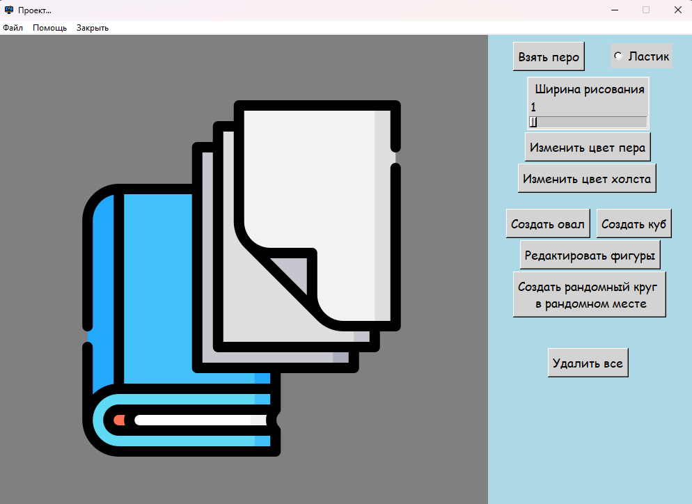

Добро пожаловать на справочный сайт
Пояснительная записка
Проект "Графический редактор" (задание №2)
Выполнил: Акжигитов Марат группа k1200
Системные требования: Windows 7, 3 Мб оперативной памяти

На данном сайте будет вся справочная информация по программе Графический редактор Дмитрия Владимировича.
При старте приложения всплывает главное окно в котором есть три варианта действий:
- Узнать про автора
- Редактировать изображение
- Начать новый проект
При выборе создать обычный проект, откроется окно с холстом и основными функциями.

Основные возможности:
- Взять перо и Ластик -- логично что позволяют стирать и рисовать что-то
- Ползунок - может изменять ширину пера и ластика от 1 до 37
- Две кнопки позваляющие менять цвет пера и фона. (В программе вшито, что цвета не могут совпадать)
- Присутствует возмоность полной очистки фона
- Пока реализовано только рисование овалов и прямоугольноков. Также можно создать круг рандомного размера в случайном месте.
- Присутсвует радактирование фигур:
- Ползунок дает возможность менять ширину границы (в начале 10)
- Выбор цвета границы и заливки по кнопкам
- Реализована возможность сохранения проекта:
- Либо в автоматически создаваемую папку в Загрузки в формате .jpg
- Либо в ручном режиме в формат .png , .ico, .jpg (При сохранении в любом из вариантов для удобства заголовок окна меняет название на выбранное название файла)
- Вверху присутсвует меню с помощью которого осуществляется основное получение информации
- Можно также добавить на фон луг или поле

При выборе редактирования вначале откроется меню выбора файла, а после откроется класическое окно редактирования.
Функции совпадают полностью с одним исключением:
- В данном месте нельзя выбрать новый фон
Для просмотра кода можете перейти на GitHub